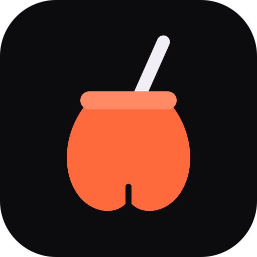

qule.ar · 11 ideas de logo
01 · Durazno
02 · La q
03 · La esquina
04 · La mirada
05 · El trazo
06 · El antifaz
07 · Antifaz al revés
08 · El punto
09 · La palabra
10 · El farol

12 · El mate (propuesta)
 01 · Durazno
01 · Durazno 02 · La q
02 · La q 03 · La esquina
03 · La esquina 04 · La mirada
04 · La mirada 05 · El trazo
05 · El trazo 06 · El antifaz
06 · El antifaz 07 · Antifaz al revés
07 · Antifaz al revés 08 · El punto
08 · El punto 09 · La palabra
09 · La palabra 10 · El farol
10 · El farol